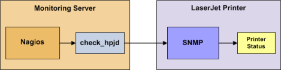

Up To: Contents
Up To: Contents
 See Also: Monitoring Publicly Available Services
See Also: Monitoring Publicly Available Services
Introduction
This document describes how you can monitor the status of networked printers. Specifically, HP printers that have internal/external JetDirect cards/devices, or other print servers (like the Troy PocketPro 100S or the Netgear PS101) that support the JetDirect protocol.
The check_hpjd plugin (which is part of the standard Nagios plugins distribution) allows you to monitor the status of JetDirect-capable printers which have SNMP enabled. The plugin is capable of detecting the following printer states:
 Note: These instructions assume that you've installed Nagios according to the quickstart guide. The sample configuration entries below reference objects that are defined in the sample config files (commands.cfg, templates.cfg, etc.) that are installed if you follow the quickstart.
Note: These instructions assume that you've installed Nagios according to the quickstart guide. The sample configuration entries below reference objects that are defined in the sample config files (commands.cfg, templates.cfg, etc.) that are installed if you follow the quickstart.
Overview
Monitoring the status of a networked printer is pretty simple. JetDirect-enabled printers usually have SNMP enabled, which allows Nagios to monitor their status using the check_hpjd plugin.
The check_hpjd plugin will only get compiled and installed if you have the net-snmp and net-snmp-utils packages installed on your system. Make sure the plugin exists in /usr/local/nagios/libexec before you continue. If it doesn't, install net-snmp and net-snmp-utils and recompile/reinstall the Nagios plugins.
Steps
There are several steps you'll need to follow in order to monitor a new network printer. They are:
What's Already Done For You
To make your life a bit easier, a few configuration tasks have already been done for you:
The above-mentioned config files can be found in the /usr/local/nagios/etc/objects/ directory. You can modify the definitions in these and other definitions to suit your needs better if you'd like. However, I'd recommend waiting until you're more familiar with configuring Nagios before doing so. For the time being, just follow the directions outlined below and you'll be monitoring your network printers in no time.
Prerequisites
The first time you configure Nagios to monitor a network printer, you'll need to do a bit of extra work. Remember, you only need to do this for the *first* printer you monitor.
Edit the main Nagios config file.
vi /usr/local/nagios/etc/nagios.cfg
Remove the leading pound (#) sign from the following line in the main configuration file:
#cfg_file=/usr/local/nagios/etc/objects/printer.cfg
Save the file and exit.
What did you just do? You told Nagios to look to the /usr/local/nagios/etc/objects/printer.cfg to find additional object definitions. That's where you'll be adding host and service definitions for the printer. That configuration file already contains some sample host, hostgroup, and service definitions. For the *first* printer you monitor, you can simply modify the sample host and service definitions in that file, rather than creating new ones.
Configuring Nagios
You'll need to create some object definitions in order to monitor a new printer.
Open the printer.cfg file for editing.
vi /usr/local/nagios/etc/objects/printer.cfg
Add a new host definition for the networked printer that you're going to monitor. If this is the *first* printer you're monitoring, you can simply modify the sample host definition in printer.cfg. Change the host_name, alias, and address fields to appropriate values for the printer.
define host{
use generic-printer ; Inherit default values from a template
host_name hplj2605dn ; The name we're giving to this printer
alias HP LaserJet 2605dn ; A longer name associated with the printer
address 192.168.1.30 ; IP address of the printer
hostgroups allhosts ; Host groups this printer is associated with
}
Now you can add some service definitions (to the same configuration file) to monitor different aspects of the printer. If this is the *first* printer you're monitoring, you can simply modify the sample service definition in printer.cfg.
Note: Replace "hplj2605dn" in the example definitions below with the name you specified in the host_name directive of the host definition you just added.
Add the following service definition to check the status of the printer. The service uses the check_hpjd plugin to check the status of the printer every 10 minutes by default. The SNMP community string used to query the printer is "public" in this example.
define service{
use generic-service ; Inherit values from a template
host_name hplj2605dn ; The name of the host the service is associated with
service_description Printer Status ; The service description
check_command check_hpjd!-C public ; The command used to monitor the service
normal_check_interval 10 ; Check the service every 10 minutes under normal conditions
retry_check_interval 1 ; Re-check the service every minute until its final/hard state is determined
}
Add the following service definition to ping the printer every 10 minutes by default. This is useful for monitoring RTA, packet loss, and general network connectivity.
define service{
use generic-service
host_name hplj2605dn
service_description PING
check_command check_ping!3000.0,80%!5000.0,100%
normal_check_interval 10
retry_check_interval 1
}
Save the file.
Restarting Nagios
Once you've added the new host and service definitions to the printer.cfg file, you're ready to start monitoring the printer. To do this, you'll need to verify your configuration and restart Nagios.
If the verification process produces any errors messages, fix your configuration file before continuing. Make sure that you don't (re)start Nagios until the verification process completes without any errors!